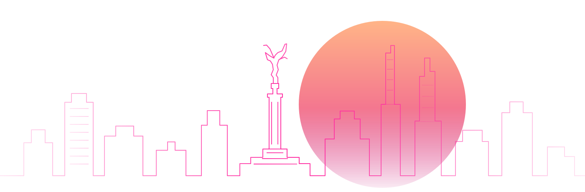

Visibilidad de marca
Presencia de tu logotipo durante el evento del 26 de octubre.
Ubicaciones y materiales sujetos a confirmación.FEMTECH MÉXICO™ × CANACINTRA
RUTA FEMTECH 2026
INDUSTRIA. INNOVACIÓN. SALUD.
Posiciona a tu empresa, fortalece relaciones estratégicas y participa en un ecosistema que conecta industria, tecnología, innovación y salud.

UNA ALIANZA CON VISIÓN DE FUTURO
El Patrocinio Gold de Ruta FemTech 2026 conecta a tu empresa con espacios de visibilidad, relacionamiento empresarial y colaboración en el ecosistema de innovación en salud de la mujer.
CONEXIONES QUE ABREN CAMINO
Una inversión.
Cinco formas de conectar.
Presencia de tu logotipo durante el evento del 26 de octubre.
Ubicaciones y materiales sujetos a confirmación.Un espacio tipo stand pequeño durante el cóctel para conectar con asistentes y presentar tu empresa.
Dimensiones y requerimientos operativos por confirmar.Invita a cinco representantes, clientes o aliados estratégicos al cóctel VIP.
Los accesos forman parte del patrocinio empresarial.Acceso a reuniones de Mujeres Industriales, Sector Médico y Sector Innovación de CANACINTRA, conforme a sus calendarios y condiciones de participación.
Fechas por confirmar. Este beneficio no constituye una membresía.Oportunidad de participar como ponente, previa revisión y aprobación del comité correspondiente.
Participación en reuniones seleccionadas de Mujeres Industriales.FEMTECH MÉXICO™ × CANACINTRA
CANACINTRA reúne una amplia red de empresas, sectores industriales y líderes que contribuyen al desarrollo económico y tecnológico del país.
Tu patrocinio abre oportunidades de vinculación con líderes empresariales, representantes de la industria médica y actores del ecosistema de innovación.
Cifras proporcionadas para la propuesta, sujetas a verificación antes de publicación. Describen la red institucional; no representan asistencia, exposición ni acceso garantizados.
RUTA FEMTECH 2026
26 OCTMXN $30,000
Tratamiento de IVA por confirmar antes de habilitar el pago.
Un patrocinio por empresa · Cinco invitados incluidos
TU EMPRESA, PARTE DEL FUTURO
Completa los datos de tu empresa para registrar tu participación como Patrocinador Gold.
CLARIDAD EN CADA PASO
Propuesta para revisión organizativa y legal · versión 2026-10-20-borrador. No habilita contratación ni pago. Los responsables, políticas y fechas pendientes deberán completarse antes de publicar.
El Patrocinio Gold es una aportación empresarial para Ruta FemTech 2026, prevista para el lunes 26 de octubre de 2026 en Ciudad de México. El evento principal y el cóctel VIP son actividades distintas. La propuesta tiene un precio de referencia de MXN $30,000 por un patrocinio. El tratamiento del IVA, el total exigible, la entidad contratante y el emisor fiscal están pendientes de confirmación.
El patrocinio se confirma únicamente cuando el proveedor de pagos o GoHighLevel verifica la transacción. Enviar un formulario o visitar una página de confirmación no acredita pago. Los pagos pendientes o fallidos no activan beneficios; el registro deberá conservarse para reintento en el flujo definitivo.
Se incluyen cinco accesos individuales al cóctel VIP para representantes o invitados designados por la empresa. No se venden como cinco productos separados. Los nombres se podrán registrar después del pago, dentro del plazo que confirme la organización. Horario, sede exacta, reglas de acceso y fecha límite de registro están pendientes.
Se contempla visibilidad del logotipo durante el evento y un espacio de exhibición pequeño durante el cóctel. La organización debe confirmar ubicaciones, materiales, dimensiones, mobiliario, electricidad y horarios de montaje y desmontaje antes de contratar. El plazo de entrega, formato y aprobación del logotipo también está pendiente; no se garantizan ubicaciones específicas ni cifras de exposición.
El patrocinio contempla acceso a reuniones de Mujeres Industriales, Sector Médico y Sector Innovación de CANACINTRA durante seis meses, sujeto a calendarios, disponibilidad y reglas de los comités. Las fechas de inicio y término deben confirmarse. No constituye afiliación automática ni acceso a bases de datos de miembros.
La empresa podrá proponer representantes como ponentes en reuniones seleccionadas de Mujeres Industriales. Toda participación requiere revisión y aprobación del comité correspondiente; no se garantiza un espacio como ponente. No se garantizan ventas, inversión, contactos específicos ni otros resultados comerciales.
La empresa deberá proporcionar datos fiscales correctos si requiere factura. El emisor, tratamiento de IVA, plazo de facturación, medios de pago y condiciones de pago deben aprobarse y comunicarse antes de contratar.
Pendiente de aprobación: política de cancelación y reembolso, procedimiento, plazos, gastos aplicables y tratamiento de aplazamientos o cambios sustanciales del evento. No se presupone una política de pagos no reembolsables. La organización deberá informar las opciones aplicables y obtener la aceptación de los términos definitivos antes del pago.
La empresa deberá confirmar que cuenta con autorización para proporcionar sus elementos de marca. La propuesta de autorización se limita a identificar el patrocinio en los materiales del evento y los canales que ambas partes aprueben. Usos, canales, vigencia, proceso de aprobación y contacto para solicitar correcciones deben acordarse expresamente antes de publicar o utilizar los materiales.
Esta vista de revisión valida los campos dentro de tu navegador. No envía ni conserva la información del formulario. Evita usar datos personales reales durante la revisión.
Antes de habilitar el registro deben publicarse el aviso de privacidad aprobado, la identidad y domicilio del responsable, las finalidades del tratamiento, transferencias y encargados aplicables, plazos de conservación, medidas pertinentes y el canal para ejercer derechos ARCO o revocar el consentimiento conforme a la normativa mexicana aplicable. Estos datos no se han proporcionado y esta sección no sustituye el aviso definitivo.
Después del pago verificado, la organización deberá enviar confirmación e instrucciones para entregar el logotipo y registrar a cinco asistentes. Cada patrocinio deberá contar con seguimiento de entregables y de los seis meses de vinculación. Las fechas de entrega, responsable operativo, contacto oficial, mecanismo de resolución de controversias y jurisdicción aplicable deben incorporarse a la versión definitiva.
EL FUTURO DE LA SALUD DE LA MUJER
SE CONSTRUYE EN CONEXIÓN.